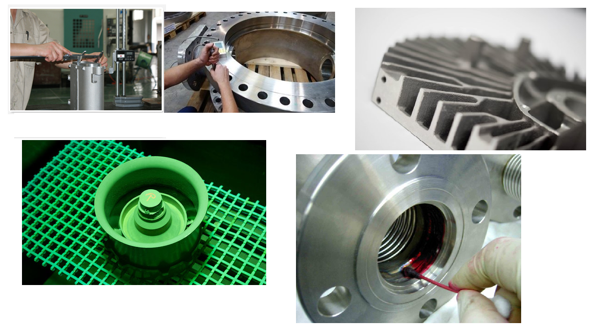

Non-destructive testing (NDT) is the process of inspecting, testing and evaluating components or materials for discontinuities or flaws, such as cracks and inclusions. NDT plays an important role in ensuring that components work in a safe, reliable and consistent manner. For this reason, it has many applications in engineering to test components used in bridges, cars, trains, planes and many other objects all around us.
This work falls into two main categories – radiographic imaging and dye penetrant testing.
Radiographic inspection is a highly effective method for identifying defects. X-rays are projected at the casting to reveal any internal defects or variations in quality. Traditionally, film techniques have been used but, increasingly, digital techniques are now becoming more popular.
Dye penetrant testing is another method to detect cracks, porosity or other surface discontinuities in various materials. The castings are dipped into a penetrant testing liquid and inspected under ultraviolet light. This liquid contains particles that fluoresce if any defects are present.